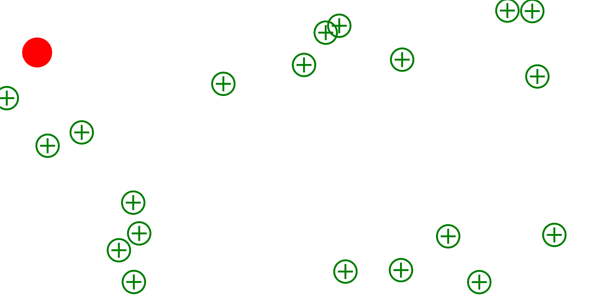

Getting Started: Collision and Tweens
In this tutorial we're continuing from where we left off in the second GettingStarted: Input tutorial. In this tutorial we'll add collision detection and tweening to our game to make something that slightly resembles a playable game.
Overview:
This tutorial requires that you've completed the second GettingStarted: Input tutorial. You can always get the full source for the Getting Started: Input tutorial Here.
Creating collidables
When we last left our Getting Started project we had a red circle that would move across the screen either by hitting "w, a, s, d, Up, Left, Right, Down" or by clicking. Now that we have free range movement with our circle we should add some targets to collect.
Lets add a new TypeScript file to our project. Name it Target.ts. Start by replacing the contents of Target.ts with: So lets go over what's going on here. First we're creating a custom class named Target which extends an EndGate Collidable object. Collidable objects are objects that can be monitored for collisions and are usually used in conjunction with a CollisionManager. Inheriting from a Collidable also means that our Target object will have a Bounds field which represents the collidable portion of our target. Lastly we have a private Graphic field which represents the visible portion of the Target object. This means IF we want to adjust the bounds and the graphic separately, we can!
One thing you may have noticed is that we didn't give our circle a color, therefore as it stands our circle is just an invisible graphic, not much of a graphic is it? Lets make the target look like a green bordered circle with a green cross in it. Modify the Target.ts file to look like: This introduces a new concept to the graphics class, children. As you can see in the modified code we added lines that utilize the AddChild method. All Graphic2d's are capable of having children graphics; these graphics are drawn when the parent is drawn. Also any children graphics drawn are drawn relative to the parent graphic, this is why the vertical and horizontal Rectangle graphics that we add to the circle graphic are at position (0,0).
Lets now add our new Target object to our default.htm and MyGame.ts file. In the default.htm file add the following script inclusion right after the EndGate library inclusion:
Lets now include a reference to our Target.ts file in the MyGame.ts file (at the very top after the EndGate library reference inclusion):
Our Target object is now ready for use!
Monitoring collisions
In this section we're going to work on drawing our targets to the screen and monitoring them with a CollisionManager. Lets start by randomly drawing targets around the screen, open up MyGame.ts and add the following fields to the field list:.
_targetCount will represent how many targets we will draw to the screen.
Next lets add a private function to the MyGame class to handle drawing targets on the screen and also monitoring them for collisions. Add this to the bottom of the MyGame class:
So there's two new API's that we've yet to go over in this code snippet.
- The first is the scene's DrawArea, this represents the canvas that is being used to draw graphics onto the screen. Therefore we're dictating the bounds of the game screen by looking at the canvas' width and height.
- The next API to look at is the CollisionManager's Monitor method; it essentially tracks Collidable's and triggers the monitored collidable's OnCollision event, the CollisionManager's OnCollision event and the Collidable's Collided method when collisions occur.
Now that we have a helper function all we need to do now is call it. Add the calling code to the MyGame constructor:
At this point you can run the application (ctrl+f5) and your screen should look something like this: 
One thing you should notice is that when you collide with the targets, nothing happens! There are two reasons why this happens, the first is because we've yet to code the reaction to the collision event for targets. Lets do this now, add the following function to the Target.ts's Target class: This function overrides the base Collidable's Collided function so we can do what we want when the Target collides. Most of the code is described via the comments but the one piece I feel I should clarify is calling the base classes Collided function at the very end; the purpose of calling the base collided function is so that the OnCollision event is then triggered for the Collidable.
If you were to run the application now you'd still see that nothing happens when you run over the targets. This leads me to the second reason why running over targets does nothing. Currently we're just drawing our red circle, but we're not monitoring it for collisions because it's just a graphic, not a collidable. So lets fix this, lets make our red circle a collidable object, lets call it a Seeker. Add a new TypeScript file to the project and call it Seeker; now replace the contents with: This setup should look familiar, we're essentially creating a drawable collidable the same way we did when we created our targets class. However, unlike the targets class we will be constantly moving the Seeker class based on user input. That means we need to re-implement some code from the MyGame.ts, more specifically we need to implement the movement controller for our Seeker class.
Lets start by adding a static speed variable to our seeker's field list: Next, lets add our public movement controller field: and finally lets initialize the movement controller at the end of our constructor: The only difference from here and in the MyGame.ts is that we're now passing in multiple objects to the movement controller's initialization constructor. With how TypeScript compiles, in order to know that all elements in an array are of the correct type you need to either cast an array to the correct type or you need to explicitly declare it as new Array<foo>.
The Seeker.ts should now look something like this:
Now the last step in all this is cleaning up the MyGame.ts file to utilize the new Seeker class appropriately. Remove the movement controller, and circle fields; and add a seeker field. The MyGame field list should look something like: Next remove the old movement controller initialization from the constructor, initialize a seeker instead of a circle and change all references to the movement controller to then use the seeker's movement controller. The updated constructor should look something like this:
You should now be able to run the application and collide with all the targets. As you collide you should see the targets begin to disappear.
Juicing it up with tweens
I'm sure you've noticed that clicking on each target with your mouse instantly captures the targets. This is an interesting game mechanic but we can do better. Let's make it possible to capture multiple targets with a single click by using a Vector2dTween.
Lets add a _moveTween field to our field list at the top of the MyGame class: Lets then initialize it within our constructor: You'll notice that in this code snippet the we're passing in a default From and To value, as well as the Duration. Finally we're passing in a EaseOut Back tweening function. This function represents how the tween will transition From values to the corresponding To value.
Next we need to add logic to update our seekers position every time the tween updates/changes its Current value, add the following after the tween initialization within the constructor: Again, take notice to how we're adjusting the seeker's movement controller position and not the graphic/bounds directly.
We then need to change how our seeker moves when we click the game screen, change the mouse click event handling code to look something like this: So here we set our From value to be the seekers current location and we set our To value to be where we clicked. We then Restart the tween which essentially Reset's and then Play's the tween.
The last thing we need to do is Update the tween so it can update its value when its playing. Add the following line of code to the update function:
Synopsis
Through this final getting started tutorial you should have learned the basics of creating Collidable's and even tweening objects to add different game mechanics.
Here's the final list of completed files:
- default.htm:
- MyGame.ts:
- Target.ts:
- Seeker.ts:
And if you'd like to get the project source in its entirety you can always download it here:
Download Tutorial Source